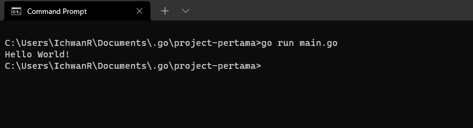
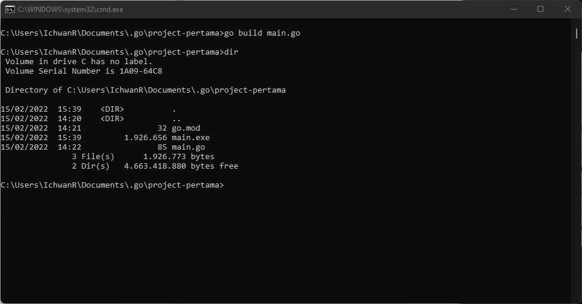

Golang Summary
- Version: 1.0
- Author: Ichwan Rizky Wahyudin
- Created: 15 Februari, 2022
- Update: -
Installation
Ikuti langkah-langkah berikut untuk memasang Golang:
- Silahkan kunjungi Website resmi Golang lalu download file(.msi) dengan versi sesuai dengan keinginan dan sesuai dengan OS(Operating System) Anda.
- Install
go1.17.7.windows-amd64.msi(Versi Terbaru Saat Ini) - Jika sudah selesai cek versi Golang dengan cara memakai Command prompt(cmd)
-
go version
-
- Jika sudah mengecek akan menampilkan versi Golang artinya berhasil terpasang di Komputer Anda, Contoh:
-
C:\Users\IchwanR>go version
go version go1.17.7 windows/amd64
-
Visual Studio Code
Disini kita akan menggunakan Visual Studio Code untuk kode editor
Ada extension yang harus di install(pasang) di Visual Studio Code Anda. Extension Golang VsCode
Dengan meng-install Go Extension pada VSCode, maka development akan menjadi lebih menyenangkan dan mudah.
Banyak benefit yang didapat dari ekstensi ini, beberapa di antaranya adalah integrasi dengan kompiler Go,
auto lint on save, testing with coverage, fasilitas debugging with breakpoints, dan lainnya.
Cara instalasi ekstensi sendiri cukup mudah, klik View -> Extension atau klik ikon
Extension Marketplace di sebelah kiri (silakan lihat gambar berikut, deretan button paling kiri).
Setelah itu ketikan Go pada inputan search, silakan install ekstensi Go buatan GO Team
at Google.
Golang Commands
Pengembangan aplikasi Go tak jauh dari hal-hal yang berbau CLI atau Command Line Interface. Proses
inisialisasi projek, kompilasi, testing, eksekusi program, semuanya dilakukan lewat command line.
Go menyediakan command go, dan pada chapter ini kita akan mempelajari beberapa di antaranya.
Command god mod init
Command go mod init digunakan untuk inisialisasi projek pada Go (menggunakan Go Modules). Untuk nama projek bisa menggunakan apapun, tapi umumnya adalah disamakan dengan nama direktori. Nama projek ini penting karena nantinya berpengaruh pada import path sub packages yang ada dalam projek tersebut.
- mkdir (nama-project)
- cd (nama-project)
- go mod init (nama-project)
Command go run
Command go run digunakan untuk eksekusi file program (file ber-ekstensi .go ).
Cara penggunaannya dengan menuliskan command tersebut diikuti argumen nama file.
Berikut adalah contoh penerapan go run untuk eksekusi file program main.go yang
tersimpan di path project-pertama yang path tersebut sudah diinisialisasi menggunakan
go mod init
- cd project-pertama
- go run main.go

Command go run hanya bisa digunakan pada file yang nama package-nya adalah main
Jika ada banyak file yang package-nya main dan file-file tersebut berada pada satu direktori level dengan
file utama, maka eksekusinya adalah dengan menuliskan semua file sebagai argument command
go run. Contohnya bisa dilihat pada kode berikut.
- go run main.go library.go
Command go test
Go menyediakan package testing, berguna untuk keperluan unit test. File yang akan di-test
harus memiliki akhiran _test.go.
Berikut adalah contoh penggunaan command go test untuk testing file
main_test.go.
go test main.go
Command go build
Command ini digunakan untuk compile file program
Sebenarnya ketika eksekusi program menggunakan go run, terjadi proses kompilasi juga. File
hasil kompilasi akan disimpan pada folder temporary untuk selanjutnya langsung dieksekusi.
Berbeda dengan go build, command ini menghasilkan file executable atau binary pada folder yang sedang aktif. Contohnya bisa dilihat pada kode berikut.
Pada contoh di atas, projek project-pertama di-build, menghasilkan file baru pada folder yang sama, yaitu
project-pertama.exe, yang kemudian dieksekusi. Default-nya nama projek akan otomatis
dijadikan nama
binary.
Untuk nama executable sendiri bisa diubah menggunakan flag -o. Contoh:
go build -o (nama-project)go build -o nama-program.exe
Command go get
Command go get digunakan untuk men-download package. Sebagai contoh saya ingin men-download
package Kafka driver untuk Go pada projek project-pertama
cd project-pertamago get github.com/segmentio/kafka-godir
Pada contoh di atas, github.com/segmentio/kafka-go adalah URL package kafka-go. Package yang
sudah
terunduh tersimpan dalam temporary folder yang ter-link dengan project folder di mana command
go get
dieksekusi, menjadikan projek tersebut bisa meng-import package terunduh.
Untuk mengunduh dependensi versi terbaru, gunakan flag -u pada command go get, misalnya:
go get -u github.com/segmentio/kafka-go
Command go mod tidy
Command go mod tidy digunakan untuk memvalidasi dependensi. Jika ada dependensi yang belum
ter-download, maka akan otomatis di-download.
Command go mod vendor
Command ini digunakan untuk vendoring
Program Pertama
Semua persiapan sudah selesai, saatnya masuk pada sesi programming. Program pertama yang akan kita buat adalah aplikasi kecil yang menampilkan text Hello world.
Pada chapter ini akan dijelaskan secara komprehensif step-by-step mulai dari awal. Mulai dari pembuatan project, pembuatan file program, sesi penulisan kode (coding), hingga eksekusi program.
Inisialisasi Projek
Buat direktori bernama hello-world bebas ditempatkan di mana. Lalu via CLI, masuk ke
direktori tersebut dan jalankan command untuk inisialisasi projek.
mkdir hello-worldcd hello-worldgo mod init hello-world
Load Projeck Folder ke Visual Studio Code
Buka editor, di sini Saya menggunakan VSCode. Cari menu untuk menambahkan projek, lalu pilih projek
folder hello-world. Untuk beberapa jenis editor, cara load projek bisa cukup dengan klik-drag
folder tersebut ke editor.
File program di sini maksudnya adalah file yang isinya source code Go. File ini berekstensi
.go.
Di dalam project yang telah dibuat, siapkan sebuah file dengan nama bebas, yang jelas harus ber-ekstensi
.go. Pada contoh ini saya menggunakan nama file main.go.
Pembuatan file program bisa dilakukan lewat CLI atau browser, atau juga lewat editor. Pastikan file dibuat
dalam projek folder ya.
Projek Hello World
Setelah project folder dan file program sudah siap, saatnya untuk programming.
Di bawah ini merupakan contoh kode program sederhana untuk memunculkan text Hello world ke layar output command prompt. Silakan salin kode berikut ke file program yang telah dibuat. Sebisa mungkin jangan copy paste. Biasakan untuk menulis dari awal, agar cepat terbiasa dan familiar dengan Go.
package main
import "fmt"
func main() {
fmt.Println("Hello World")
}
Setelah kode disalin, buka terminal (atau CMD bagi pengguna Windows), lalu masuk ke direktori proyek,
kemudian jalankan program menggunakan perintah go run.
$ go run main.goHello World
Pembahasan
package main
Setiap file program harus memiliki package. Setiap project harus ada minimal satu file
dengan nama package main. File yang ber-package main, akan dieksekusi pertama kali ketika
program di jalankan.
import "fmt"
Import package yang dibutuhkan untuk program. Pada contoh ini, package fmt digunakan untuk
menampilkan text ke layar.
func main()
Fungsi utama. Fungsi utama adalah fungsi yang akan dieksekusi pertama kali ketika program dijalankan.
fmt.Println("Hello World")
Fungsi fmt.Println() digunakan untuk memunculkan text ke layar (pada konteks ini, terminal
atau CMD). Di program pertama yang telah kita buat, fungsi ini memunculkan tulisan Hello world.
Fungsi fmt.Println() berada dalam package fmt, maka untuk menggunakannya perlu package tersebut untuk
di-import terlebih dahulu.
Fungsi fmt.Println() dapat menampung parameter yang tidak terbatas jumlahnya. Semua data parameter akan
dimunculkan dengan pemisah tanda spasi.
fmt.Println("Hello", "world!", "how", "are", "you")